01
Один герой и один смысл
В каждом кадре топ-10 есть главное: взгляд, красный капюшон, лось в тумане, стая рыб. Нет конкурирующих деталей. У вас часто герой — цвет, а не человек или история.
Пять работ в двух завершённых тематических конкурсах: Female Color Portrait (1083) и Blue Color (1074). Сравнение с топ-10, честный разбор каждой работы и конкретный план, что делать дальше.
У вас уже есть интерес к цвету, фактуре и низкому ключу — это видно. Но в обоих конкурсах ваши работы пока конкурируют с топ-10 не техникой, а отсутствием законченного замысла: свет часто не лепит форму, композиция не ведёт взгляд, а цвет работает как фильтр, а не как часть истории. Самая сильная работа — «Тело в синем»: там вы случайно или намеренно сделали шаг от портрета к абстракции. Именно от неё стоит расти.
В каждом кадре топ-10 есть главное: взгляд, красный капюшон, лось в тумане, стая рыб. Нет конкурирующих деталей. У вас часто герой — цвет, а не человек или история.
Красный бархат, зелёный вельвет, синяя вода работают как форма. У вас синий часто наложен на всё, включая кожу, поэтому теряется объём и естественность.
Топы используют мягкий боковой/петлевой свет или жёсткий контровой. У вас свет часто плоский, фронтальный или случайный, и лицо не получает скульптуру.
Топы дышат: есть негативное пространство, продуманный кроп, руки и линии. У вас кроп часто режет лицо, а руки и реквизит зажаты.
Платок, цветы, скрипка, шапка, комната — среда создаёт мир. У вас есть шапка и камера, но они не складываются в образ.
Топы технически чисты: глаза в фокусе, светы не перебиты, фон контролируется. И почти за каждым кадром чувствуется серия/проект, а не один случайный снимок.
Тема — цветной женский портрет. Топ-10 — это не просто красивые лица, а законченные образы: стилизация, свет, цвет и жест. Почти все работы сняты в контролируемой среде, с продуманным фоном и аксессуарами. Сильнее всего работают те кадры, где цвет и реквизит складываются в одну историю.
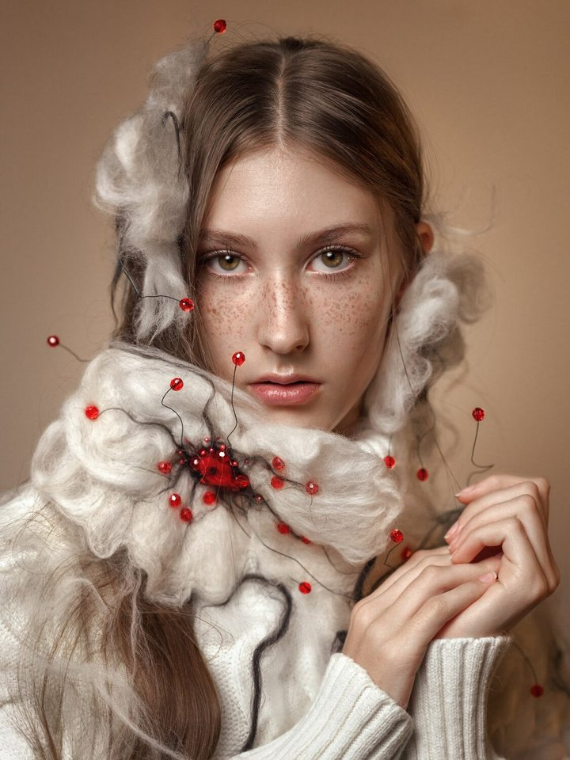
#01 BEST OF CONTESTЦветовой акцент и стилизация: красные бусины на белом пухе, тёплый фон, спокойный свет. Образ читается как сказка, а не просто портрет.
 #02
BEST OF CONTEST
#02
BEST OF CONTEST
Минимализм: бежевый платок, чёрный фон, мягкий петлевой свет. Всё работает на взгляд и фактуру, ничего лишнего.
 #03
BEST OF CONTEST
#03
BEST OF CONTEST
Красный бархат — главный герой. Цвет, фактура, жест руки и тёмный фон собирают классический, но сильный образ.
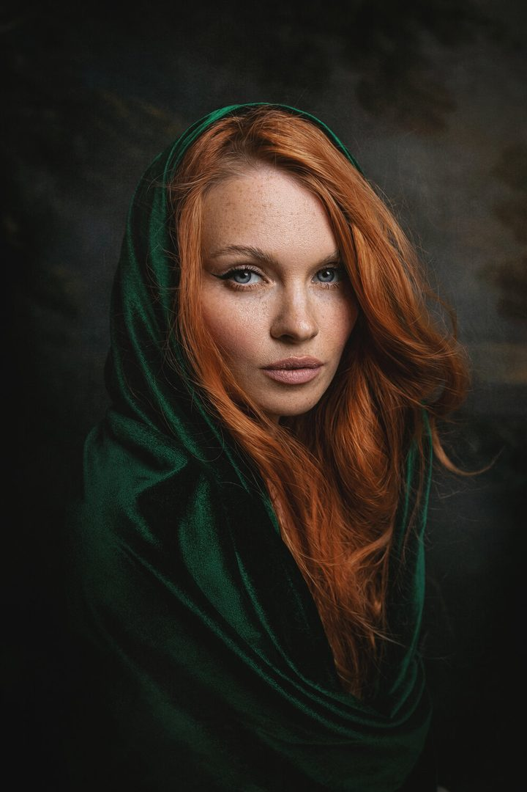
#04 BEST OF CONTESTКомплементарная пара рыжий/зелёный. Мягкий свет и фактурный фон поддерживают цвет, а взгляд держит контакт.
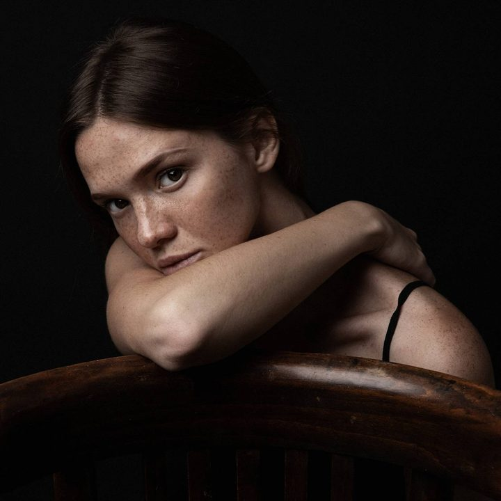
#05 BEST OF CONTESTИнтимная поза, обнажённое плечо, мягкий боковой свет. Минимум деталей, максимум формы и доверия к модели.
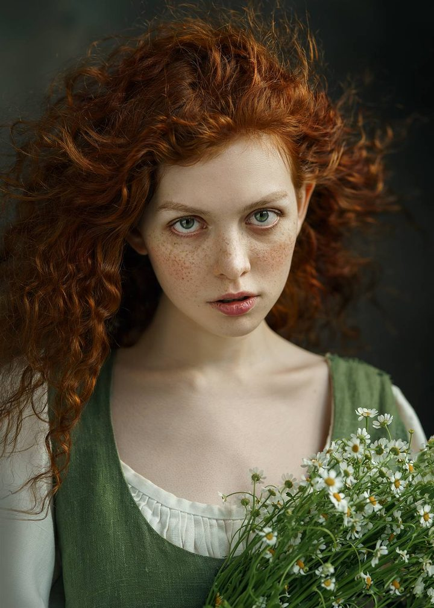
#06 BEST OF CONTESTРыжие волосы, веснушки, зелёное платье и ромашки. Естественная палитра и прямой взгляд без переигрывания.
 #07
BEST OF CONTEST
#07
BEST OF CONTEST
Environmental portrait: красная шапка, синяя рубашка, клубок, комната. Есть история и среда, а не только лицо.
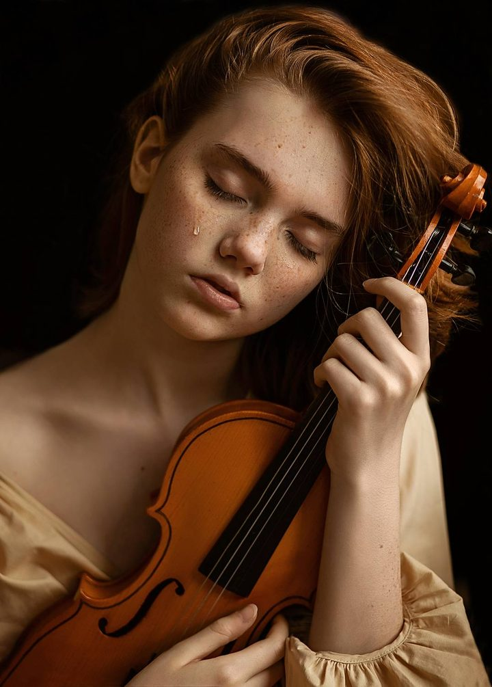
#08 BEST OF CONTESTСкрипка, закрытые глаза, веснушки, тёплый свет. Эмоция и реквизит работают вместе, без пафоса.
 #09
BEST OF CONTEST
#09
BEST OF CONTEST
Простой портрет: рыжие волосы, зелёная рубашка, тёмный фон, мягкий свет. Ничего лишнего, всё на месте.
 #10
BEST OF CONTEST
#10
BEST OF CONTEST
Beauty-портрет: развевающиеся волосы, обнажённые плечи, чистый свет, спокойный взгляд. Сильная пластика и контроль.
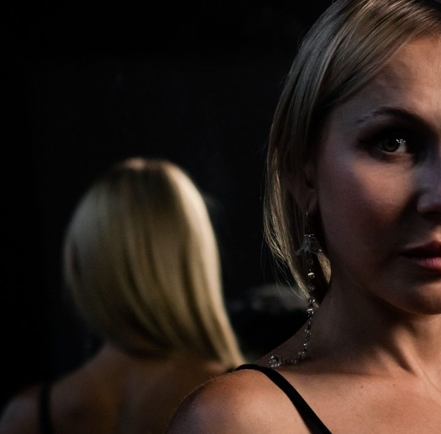
I stageПопытка сделать низкоключевой портрет с двойником/отражением. Настроение есть, но лицо недоэкспонировано, вторая фигура не читается как замысел, а резкость и композиция оставляют вопросы. Это ещё не история, а намёк на неё.
Добавить контровой или заполняющий свет, чтобы отделить лицо от фона. Решить, что такое вторая фигура, и сделать её читаемой: резче, светлее, иначе расположенной. Поработать с фоном и кадрированием, чтобы тёмные зоны были частью формы, а не провалом.
Следующий кадр: Портрет-двойник: модель и отражение, один источник, контровой свет, тёмный фон, продуманная геометрия. Снять 3 варианта: отражение в фокусе, отражение в расфокусе, только силуэт.
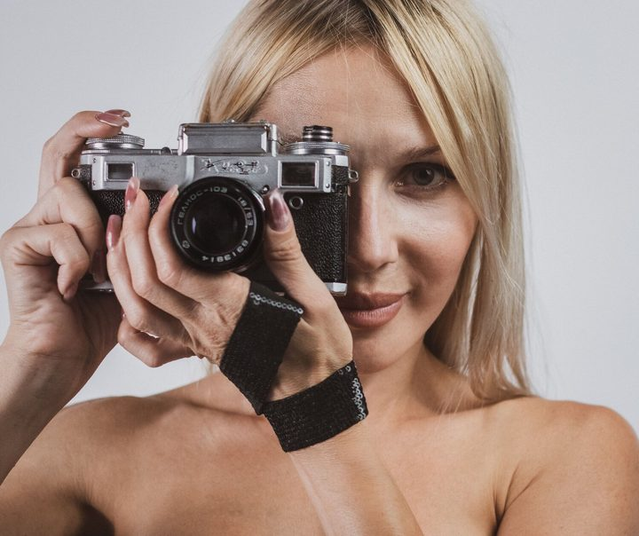
TOP 34%Понятная идея «фотограф с камерой», но исполнение ближе к любительскому снимку: плоский свет, пересвеченный фон, камера закрывает лицо, руки и ремень зажаты. В топе такие клише не проходят — там камера была бы частью истории, а не маской.
Сделать камеру частью истории: например, фотограф смотрит в кадр, камера опущена, или мы видим, что она снимает. Поставить свет сбоку, убрать пересвет фона, продумать руки. Добавить один цветовой акцент и использовать более длинное фокусное.
Следующий кадр: Портрет фотографа: камера в руках, лицо открыто, свет Rembrandt/loop, тёмный фон, один цветовой акцент. Снять 5 кадров: камера у лица, камера опущена, руки, деталь, среда.
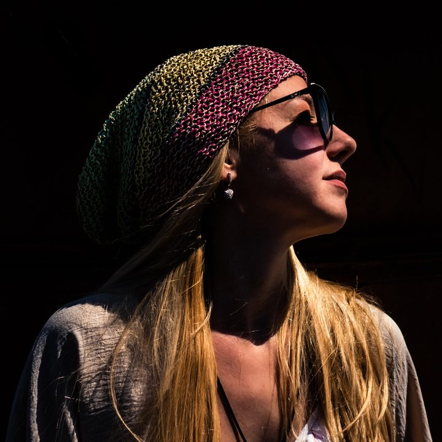
I stageСамый «уличный» кадр: жёсткое солнце, цветная шапка, профиль, чёрный фон. Цветной акцент есть, но всё остальное выглядит случайным: очки закрывают глаза, свет не строит лицо, фон — просто недодержанная улица.
Повернуть лицо к свету или использовать отражатель. Решить, что делают очки: если это концепт — показать отражение/цвет, если нет — снять их. Добавить среду (стена, тень, фактура) или сделать чистый фон. Кадрировать осознанно, а не по центру.
Следующий кадр: Стрит-портрет в жёстком солнце: шапка, очки, стена/тень, три кадра — контакт глаз, профиль, деталь. Свет должен рисовать лицо, а не просто падать.
Blue Color — конкурс, где синий должен быть главным героем, а не фильтром. Топ-10 — это природа, вода, техника, световые инсталляции и аэросъёмка; портретов в топе почти нет. Синий работает как атмосфера, среда и масштаб, а не как тонировка лица.
 #01
BEST OF CONTEST
#01
BEST OF CONTEST
Аэросъёмка китовой акулы: синяя вода как графика, масштаб, минимализм. Цвет здесь — среда, а не фильтр.
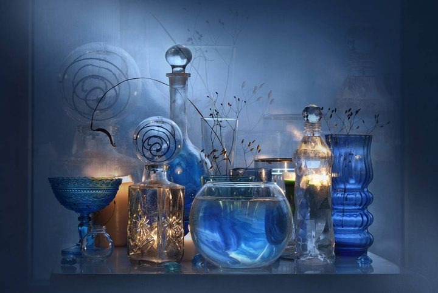
#02 BEST OF CONTESTСинее стекло, контровой свет, отражения. Натюрморт как цветовая скульптура, где синий — главный объект.
 #03
BEST OF CONTEST
#03
BEST OF CONTEST
Лось в синем тумане: силуэт, негативное пространство, атмосфера. Минимум информации, максимум настроения.
 #04
BEST OF CONTEST
#04
BEST OF CONTEST
Лайт-пейнтинг: синие линии вокруг фигуры, техника и энергия. Синий создаёт движение, а не просто тон.
 #05
BEST OF CONTEST
#05
BEST OF CONTEST
Фридайвер в стае рыб: масштаб, синева, приключение. Человек и среда соразмерны, кадр дышит.
 #06
BEST OF CONTEST
#06
BEST OF CONTEST
Ледяная река и ветки: фактура, холод, синий как состояние. Пейзаж без человека, но с сильным характером.
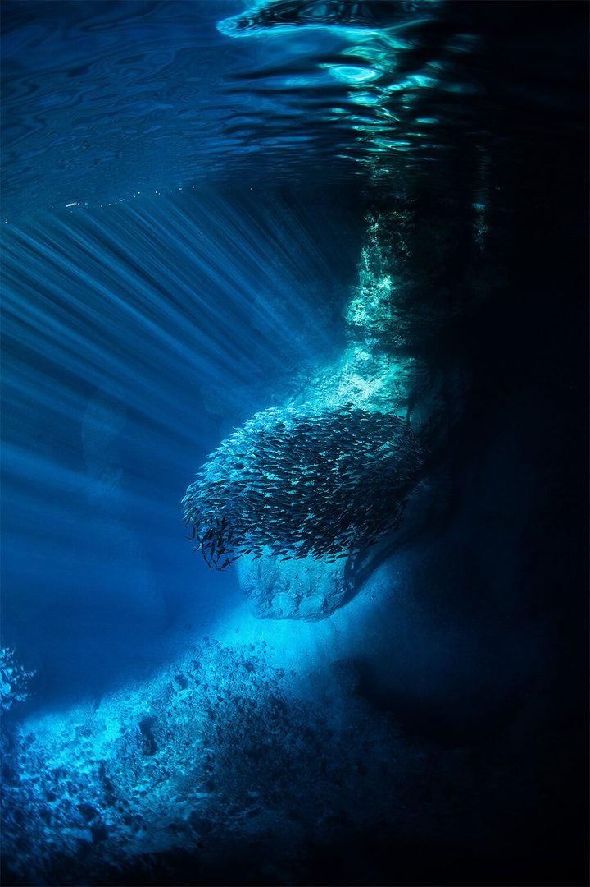
#07 BEST OF CONTESTПодводная пещера, лучи, стая. Глубина и свет создают ощущение другого мира.
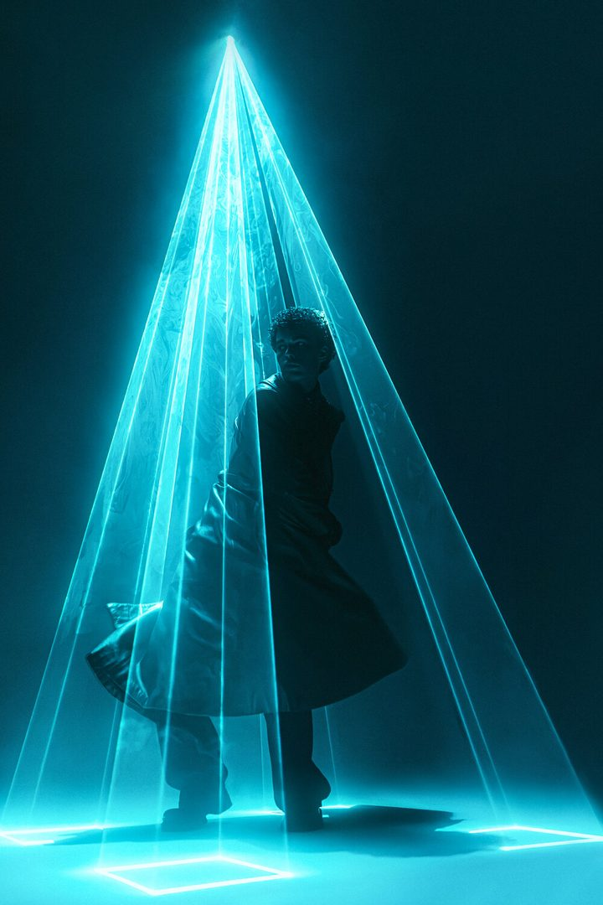
#08 BEST OF CONTESTСветовая инсталляция, силуэт, циан. Графичная футуристика, где синий — конструкция.
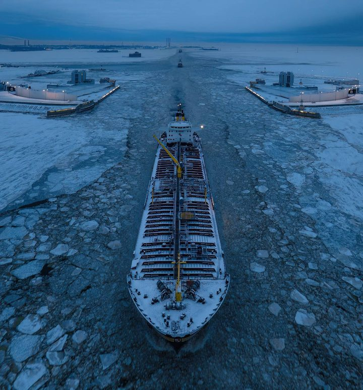
#09 BEST OF CONTESTАэросъёмка судна во льдах: геометрия, масштаб, холод. Синий работает как пространство и температура.
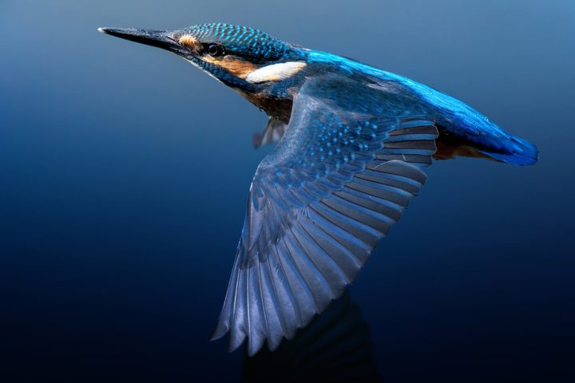
#10 BEST OF CONTESTЗимородок в полёте: синие крылья, резкость, чистый фон. Технически сложный и очень чистый кадр.
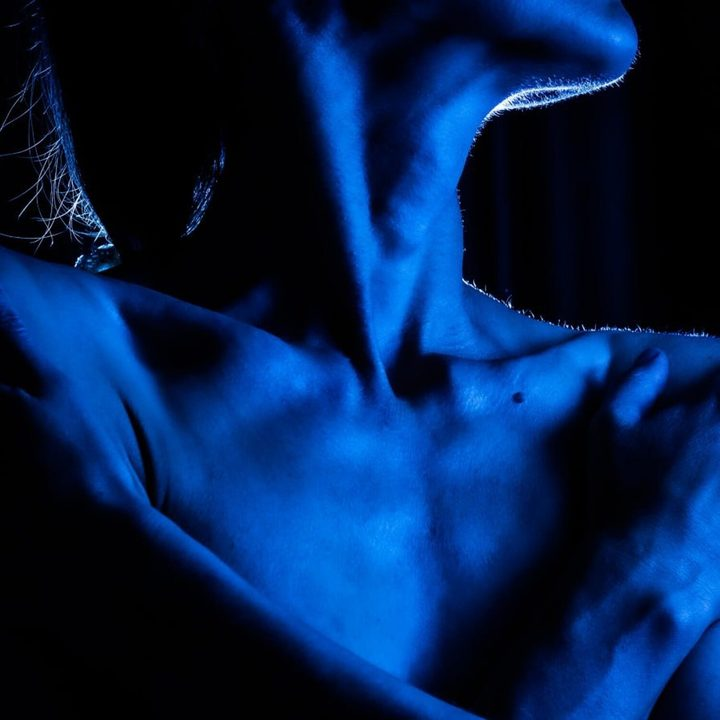
TOP 27%Лучшая работа из пяти. Здесь вы перестаёте снимать «лицо» и начинаете снимать форму: шея, плечо, рука, жёсткий синий свет, чёрный фон. Это уже абстракция, а не просто портрет, и именно этого в остальных кадрах не хватает.
Сделать из этого серию: «тело как архитектура» — 5–7 кадров с разной геометрией рук, шеи, спины. Продумать, где зритель ставит точку. Контролировать блики и добавить тонкий тёплый контровой свет, чтобы синий не был единственным цветом.
Следующий кадр: Серия в синем: один жёсткий источник, тёмный фон, тёплый rim light, разные фрагменты тела. Кадры должны работать и по отдельности, и вместе.
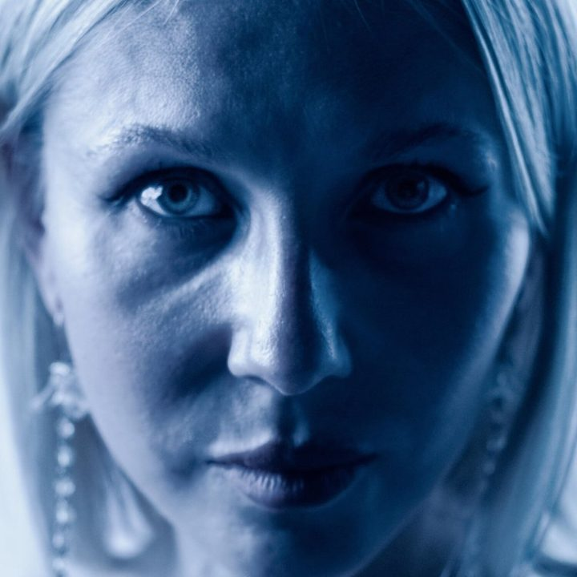
I stageСамый простой и самый уязвимый кадр серии: крупное лицо, синий монохром, прямой взгляд. Он читается как «синий портрет», но не как история. В топе такие кадры держатся не цветом, а светом, формой и деталью.
Отойти на 85–135 мм и оставить воздух вокруг лица. Поставить один источник сбоку-сверху, добавить заполнение, чтобы тень не проваливалась. Синий оставить в фоне или акценте, а кожу держать естественной. Придумать жест, предмет или среду — то, ради чего этот портрет существует.
Следующий кадр: Портрет в синем свете с одной лампой и тёплым/красным акцентом. Крупный план, но с воздухом; серия из 5 кадров: контакт, профиль, деталь, жест, среда.
Сейчас это уровень уверенного любителя: вы видите цвет, фактуру и настроение, умеете ловить взгляд. Но кадр пока не собран как высказывание: свет часто не лепит форму, композиция не ведёт зрителя, а цвет работает как фильтр.
Лучшая работа — «Тело в синем» (14152416). В ней есть то, чего нет в остальных: форма, абстракция и воздух. Слабая — «Фотограф с камерой» (14147095): идея-клише, плоский свет и пересвеченный фон.
До топ-10 не хватает не камеры, а концепта, света, композиции и серии. Если перейти от одиночных кадров к сериям, добавить арт-дирекшн и системно поработать со светом, через 3–6 месяцев можно претендовать на TOP 10–5% в тематических конкурсах. Топ-10 — следующий уровень, не сегодняшний.